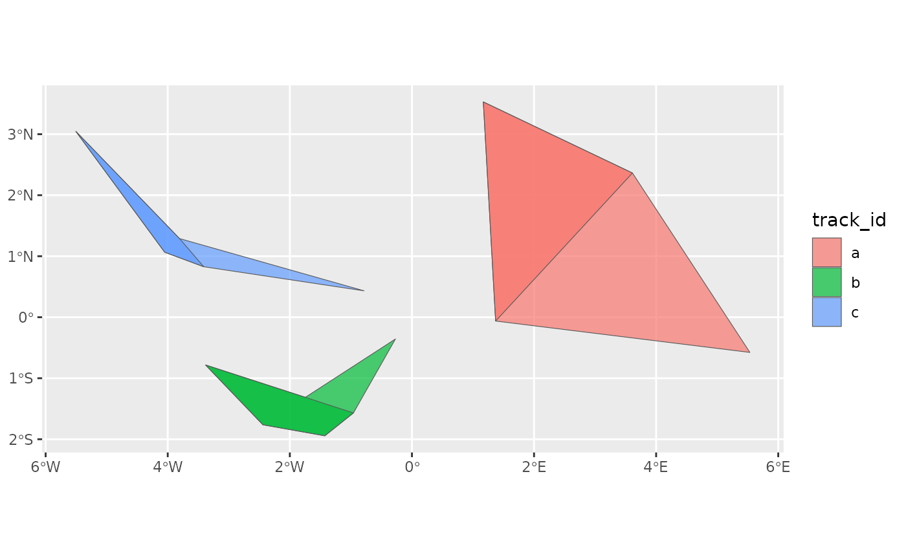

This function estimates the home range of an animal using the local convex
hull (LoCoH) method of Getz & Wilmers (2004) and Getz et al. (2007). A
convex hull is built around each location and a set of its neighbours; the
hulls are then sorted from the smallest to the largest, and the home range
for a given level is the union of the smallest hulls that, between them,
contain that proportion of the locations. Unlike the minimum convex polygon
(hr_tt_mcp()), LoCoH home ranges can have several parts, holes and
concave edges, so they can exclude areas that are never visited.
Arguments
- x
A move2 object; if explicitly grouped, the home range is estimated for each group, combining all tracks within each group. Otherwise, the track id is used as grouping variable. Every group must have events, so groupings with empty groups (e.g. from grouping by a factor with unused levels with
.drop = FALSE) give an error.- n
The parameter of the LoCoH, whose meaning depends on
type: the number of nearest neighbours for"k"(a whole number of at least 2), the radius for"r", or the maximum sum of the distances for"a"(both in the units of the projection ofx). Either a single value, or a vector with one value per group, matched to the groups in the order ofdplyr::group_keys()(i.e. sorted by the grouping variables).- type
The type of LoCoH:
"k"(the default),"r"or"a"(see Details).- levels
A vector of levels (proportions of locations) for the home ranges, as numbers between 0 and 1. The default is
c(0.5, 0.95), which corresponds to the 50% and 95% home ranges.- buffer
A non-negative number: the distance (in the units of the projection of
x) by which the home ranges are buffered. The default, 0, leaves them as they are; a small positive value (e.g. 1e-5, as inamt::hr_locoh()) also includes the hulls with no area (see Details).
Value
An sf tibble of subclass hr_tt_poly_tbl of results, with one
row per group and level, and columns:
the grouping variable (as named in
x; ifxis grouped by multiple variables, this column is namedgroup_id): the ids from the grouping ofxmethod: the method used to estimate the home range ("locoh")type: the type of LoCoH ("k","r"or"a")n: the parameter of the LoCoHlevel: the level of the home rangearea: the area of the home range (as computed bysf::st_area())geometry: the geometry of the home range as sf multipolygons
Details
Events with an empty geometry (i.e. no location) are ignored.
Three ways of choosing the neighbours of each location are available,
depending on type:
"k"(fixed number of neighbours): each hull is built from a location and itsnnearest neighbours. Note thatadehabitatHR::LoCoH.k()usesk - 1neighbours, son = k - 1gives the same hulls."r"(fixed radius): each hull is built from all the locations within a distancenof a location."a"(adaptive): each hull is built from the locations closest to a location such that the sum of their distances to it is at mostn. Getz et al. (2007) suggest using the largest distance between any two locations as a starting value forn.
The neighbour search, the hulls, their areas and the number of hulls needed
for each level are computed in C++ (with a k-d tree for the neighbour
search); the union of the hulls is computed with sf::st_union().
The rules follow amt::hr_locoh(): each
level is matched to the union of hulls whose coverage (the proportion of
locations in the hulls) is closest to it, so the actual coverage can be a
little above or below the requested level. A hull with no area (when all its
locations lie on a line, or are at the same place, as it may be the case
for locations at the den or nest) counts towards the
coverage, but only becomes part of the isopleth if buffer is positive.
amt::hr_locoh() buffers every hull by 1e-5 (its rand_buffer); setting
buffer = 1e-5 here gives the same isopleths.
Distances are computed in the units of the projection of x, and hulls are
built and merged on a plane. For unprojected data (longitude/latitude),
distances (and so n for types "r" and "a", and buffer) are thus in
degrees, and the hulls are distorted (increasingly so away from the
equator); it is recommended to project x to an appropriate projection
before using this function. Areas are computed with sf::st_area(), in the
units of the projection of x (e.g. m^2 for a UTM projection), or in m^2
for unprojected data.
References
Getz, W. M., & Wilmers, C. C. (2004). A local nearest-neighbor convex-hull construction of home ranges and utilization distributions. Ecography, 27(4), 489-505.
Getz, W. M., Fortmann-Roe, S., Cross, P. C., Lyons, A. J., Ryan, S. J., & Wilmers, C. C. (2007). LoCoH: nonparameteric kernel methods for constructing home ranges and utilization distributions. PLoS ONE, 2(2), e207.
Examples
# the tracks in example_tt are short (5 locations each), so each hull is
# built from a location and its 3 nearest neighbours
example_locoh <- hr_tt_locoh(example_tt, n = 3)
example_locoh
#> Simple feature collection with 6 features and 6 fields
#> Geometry type: MULTIPOLYGON
#> Dimension: XY
#> Bounding box: xmin: -5.5053 ymin: -1.9431 xmax: 5.5357 ymax: 3.5288
#> Geodetic CRS: WGS 84
#> # A tibble: 6 × 7
#> track_id method type n level area geometry
#> <chr> <chr> <chr> <dbl> <dbl> [m^2] <MULTIPOLYGON [°]>
#> 1 a locoh k 3 0.95 122370778607. (((1.1694 3.5288, 3.6119 2.36…
#> 2 a locoh k 3 0.5 52747834477. (((1.1694 3.5288, 1.371 -0.06…
#> 3 b locoh k 3 0.95 19966668128. (((-3.3802 -0.7828, -1.745915…
#> 4 b locoh k 3 0.5 12974478347. (((-3.3802 -0.7828, -2.4405 -…
#> 5 c locoh k 3 0.95 12754847260. (((-5.5053 3.0464, -3.8075 1.…
#> 6 c locoh k 3 0.5 6222600829. (((-5.5053 3.0464, -4.0496 1.…
library(ggplot2)
ggplot(example_locoh) +
geom_sf(aes(fill = track_id), alpha = 0.7)
